Éder Carlos Dalberto
Diretor e fundador · CEO do SIGEMEC Group
Conduz a consultoria e os treinamentos sobre programas e sistemas do MEC e do FNDE.
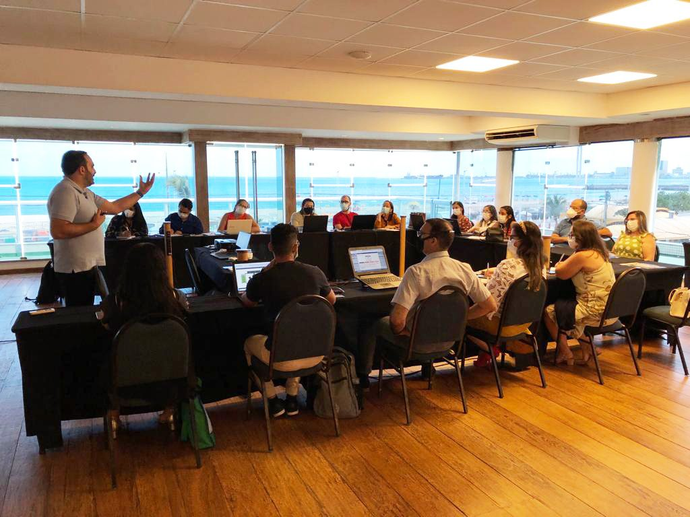
Consultoria e assessoria em gestão pública
O SIGEMEC apoia os municípios na captação de recursos federais, na execução dos programas e na prestação de contas, com consultoria, sistemas próprios e capacitação das equipes técnicas.
Áreas de atuação
Consultoria, sistemas e treinamentos que se complementam. O município contrata o que precisa e pode ampliar o atendimento quando quiser.
Consultoria e assessoria aos municípios e treinamentos para as equipes técnicas das secretarias sobre os sistemas federais do MEC e do FNDE, como o PAR.
Saiba mais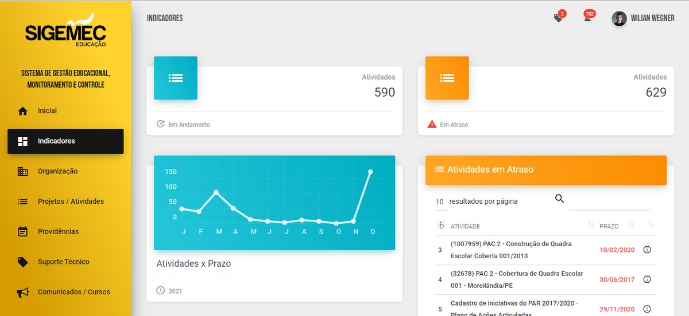
Sistema de gestão, monitoramento e controle com orientações técnicas em tempo real sobre planejamento, execução de programas e prestação de contas.
Saiba mais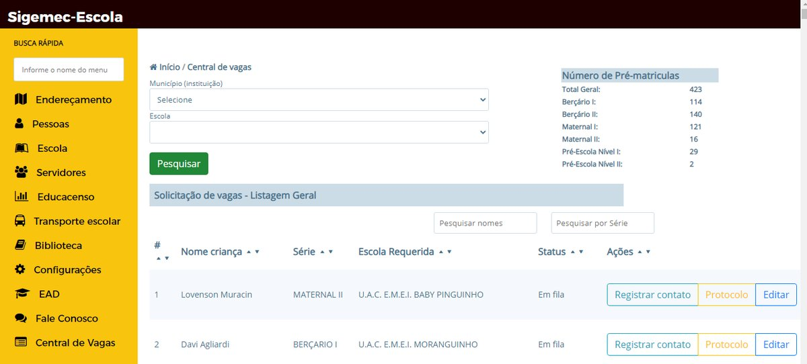
Gestão escolar, diário, central de vagas e aplicativos para professores, alunos e responsáveis, com a rede municipal integrada em um só sistema.
Saiba mais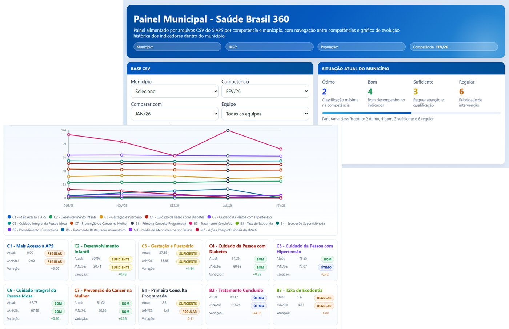
Gestão, capacitação e apoio técnico para a secretaria de saúde: programas do Ministério da Saúde, indicadores da Atenção Primária e projetos estratégicos.
Saiba maisVídeo institucional
O SIGEMEC é uma consultoria especializada em gestão educacional, escolar e da saúde, que oferece suporte estratégico para otimizar recursos e garantir resultados eficientes.
Temos o compromisso de fortalecer a gestão pública dos municípios brasileiros de acordo com a legislação vigente, capacitando as equipes técnicas das secretarias e oferecendo soluções tecnológicas para a captação de recursos federais.
Projetos aprovados
Projetos de educação infantil de municípios atendidos pelo SIGEMEC, aprovados e com o recurso pago pelo governo federal.
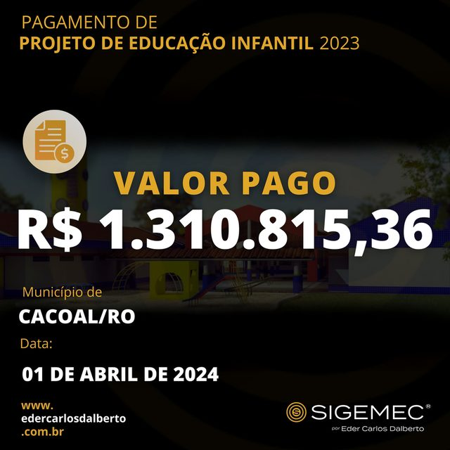
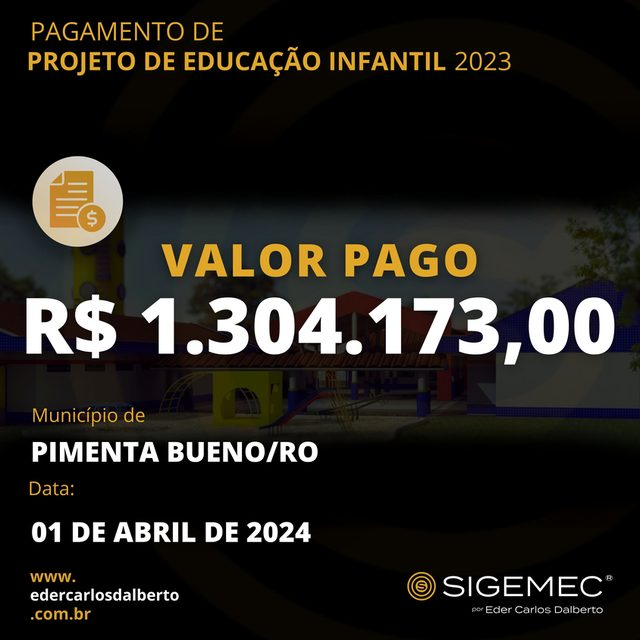
Cada estado soma os projetos pagos dos municípios atendidos.
Diretor
Fundador e CEO do SIGEMEC Group
Natural de Putinga/RS, Éder é licenciado em Ciências Físicas e Biológicas pela UNISC e bacharel em Ciências Contábeis pela UNITINS.
Foi professor e dirigente municipal de educação antes de fundar o SIGEMEC, em 2016. Desde então, conduz a consultoria e os treinamentos que já capacitaram mais de 3.000 técnicos municipais em todo o país. Em 2024, o trabalho do SIGEMEC com os municípios foi destaque na revista ISTOÉ.
Eventos e cursos
Formações presenciais para secretarias de educação, equipes técnicas e gestores escolares. As inscrições são feitas pelo site.
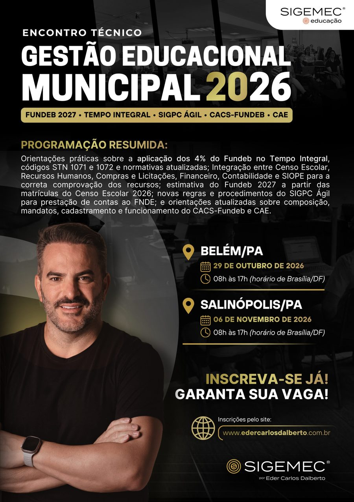
Fundeb 2027, Tempo Integral, SIGPC Ágil e as regras atualizadas do CACS-Fundeb e do CAE.
Fazer inscrição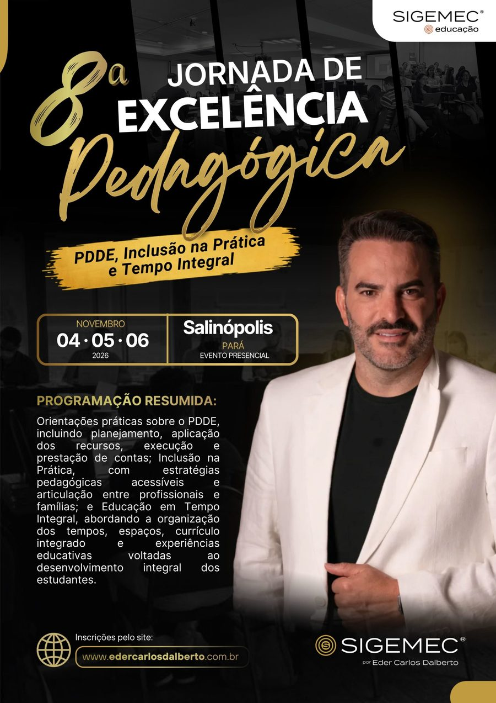
PDDE, inclusão na prática e educação em tempo integral para diretores e coordenadores pedagógicos.
Fazer inscriçãoDepoimentos
Secretárias, dirigentes e técnicos municipais que trabalham com o SIGEMEC.
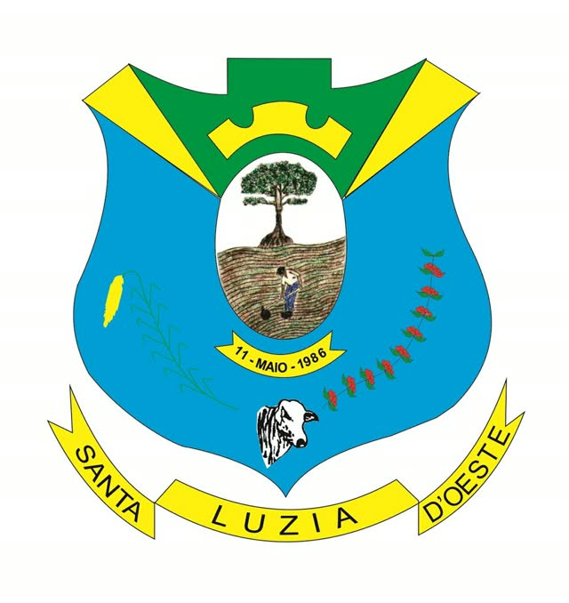
Todas as ações que estavam paradas foram regularizadas e, hoje, o município recebe integralmente os recursos destinados pelo governo federal.
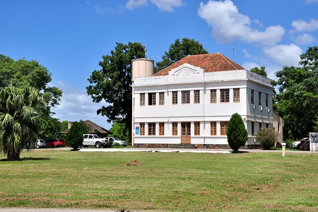
Após a contratação da empresa Sigemec, conseguimos regularizar várias pendências dentro do SIMEC, o que trouxe grande benefício para o nosso município e recursos que nos permitiram qualificar a nossa educação municipal.
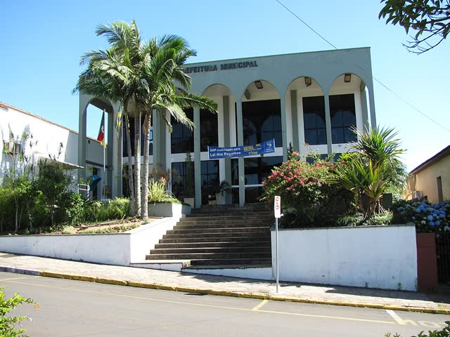
Obrigada, Eder Carlos Dalberto, por todo apoio e orientação. Pedidos e ações recém cadastrados e já fomos contemplados. Maravilha!
Muito esclarecedor, atendeu minhas expectativas, abriu horizontes para algumas coisas que estávamos totalmente perdidos. (…) Parabenizo também toda equipe, que sempre atenciosa nos dá segurança.

Capacitação excelente e eficaz. A forma de condução foi muito otimizada. Foi maravilhoso… Parabéns!

O curso que participei contribuiu bastante para o melhoramento e desempenho de minhas atividades diárias junto aos sistemas do governo federal. Parabéns Eder Carlos!

O TREINAMENTO ON-LINE com o instrutor Eder Carlos foi excelente, agregou muito e sanou várias dúvidas, foi ótimo!

Já conheço o seu trabalho e em cada nova formação eu aprendo algo novo. Pontualidade excelente, falou mais devagar e as dúvidas sanadas. Como sempre você dá um show de conhecimento. Nota mil.
Ele é muito didático, paciente, franco, direto… responde a todas as perguntas, sem exceção. (…) No meu município há muitas pendências e eu tenho certeza que agora iremos trabalhar com mais segurança!

Parabéns Eder. Você foi excelente! Transmitiu o assunto abordado de forma muito esclarecedora. Saímos do curso com os neurônios fervendo e com muita vontade de colocar em prática tudo o que aprendemos…

Quero parabenizar ao instrutor do curso, por total domínio em tudo que foi apresentado, muito grata Eder, por ter nos dado essa oportunidade de participar de seu treinamento aqui em Fortaleza.
Blog
Como contratar
A prefeitura pode contratar o SIGEMEC por adesão a uma ata de registro de preços vigente, sem precisar abrir uma licitação própria. O processo tem seis etapas.
A secretaria solicita o diagnóstico gratuito e recebe a análise do município e a proposta.
Enviamos a ata vigente, o termo de referência e a pesquisa de preços que fundamentam a adesão.
O município registra no processo por que a adesão é vantajosa e que os preços são compatíveis com o mercado.
A prefeitura solicita autorização ao órgão gerenciador da ata, e o SIGEMEC confirma o aceite como fornecedor.
Parecer jurídico, autorização da autoridade competente, assinatura do contrato e publicação no PNCP.
Reunião de alinhamento, implantação do sistema e capacitação da equipe.
Adesão à ata de registro de preços conforme o art. 86 da Lei 14.133/2021. O município também pode contratar por licitação própria. A modalidade é definida pelo setor jurídico da prefeitura, e a nossa equipe acompanha todas as etapas.
Solicitar proposta e ataContato
Tire suas dúvidas, peça uma proposta ou solicite o diagnóstico gratuito do seu município.
Diretor e fundador · CEO do SIGEMEC Group
Conduz a consultoria e os treinamentos sobre programas e sistemas do MEC e do FNDE.
Coordenadora técnica
Coordena o atendimento técnico aos municípios e ministra as formações de inclusão e de educação em tempo integral.
Advogado especialista em gestão pública
Orienta a estruturação jurídica das secretarias: CNPJ próprio, conta exclusiva e organização por sistemas.
Última atualização: 27 de outubro de 2026
Esta política explica quais dados pessoais a SIGEMEC – Dalberto Consultoria e Assessoria coleta, por que coleta e como você pode atualizar, exportar ou excluir essas informações, conforme a Lei Geral de Proteção de Dados (Lei 13.709/2018).
O CNPJ identifica o órgão público que solicita o diagnóstico ou a proposta. O CPF identifica o responsável pelo pedido e cada participante dos encontros, na lista de presença e no certificado. Esses dados não são usados para outra finalidade e ficam restritos à equipe que atende o município.
Os dados permitem a prestação dos serviços de consultoria, assessoria, capacitação e dos sistemas SIGEMEC (Gestão e Controle, Gestão Escolar e Saúde), o contato com o cliente e a oferta de novos produtos, serviços e eventos.
Os dados pessoais não estão à venda. Podem ser compartilhados apenas com empresas parceiras que viabilizam a prestação dos serviços, mediante ordem judicial ou requisição de autoridade competente, ou para a proteção dos interesses da empresa em conflitos.
Adotamos medidas técnicas e organizacionais para proteger os dados: criptografia e anonimização, mecanismos de autenticação individual e softwares de proteção contra acessos não autorizados.
Envie sua solicitação para comercial@sigemec.com.br. Respondemos em até 15 dias úteis.
Cookies são pequenos arquivos de texto guardados no seu dispositivo quando você visita um site. Eles ajudam o site a lembrar suas preferências e a medir o acesso. Usamos cookies de forma temporária, para obter estatísticas e melhorar a experiência.
Você pode desativar os cookies nas configurações do navegador, mas algumas funções do site podem deixar de funcionar.
Ao acessar e usar nossos serviços, você aceita estes termos e as leis e regulamentos aplicáveis.
Os serviços são fornecidos exclusivamente para consultoria, assessoria e capacitação em gestão pública municipal. O acesso aos sistemas é pessoal e intransferível.
Todo o conteúdo, incluindo textos, gráficos, logos e software, é propriedade do SIGEMEC e protegido pelas leis de direitos autorais.
O SIGEMEC não se responsabiliza por danos indiretos, incidentais ou consequenciais decorrentes do uso dos serviços.
Dúvidas sobre estes termos: comercial@sigemec.com.br.
As imagens dos municípios nos depoimentos vêm do acervo Wikimedia Commons, com as licenças indicadas. Brasões e bandeiras são símbolos oficiais dos municípios. As licenças CC BY e CC BY-SA permitem o uso com atribuição ao autor.